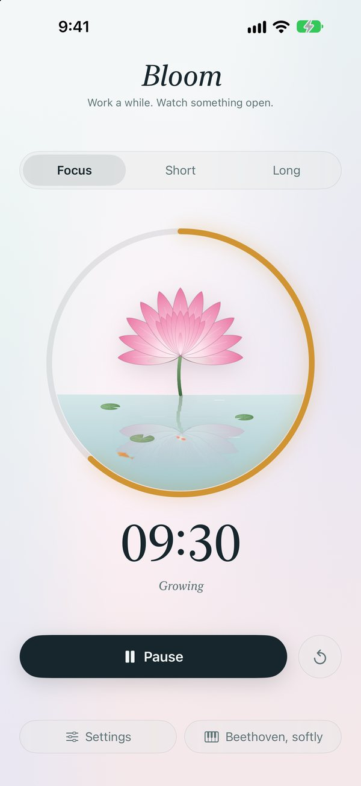
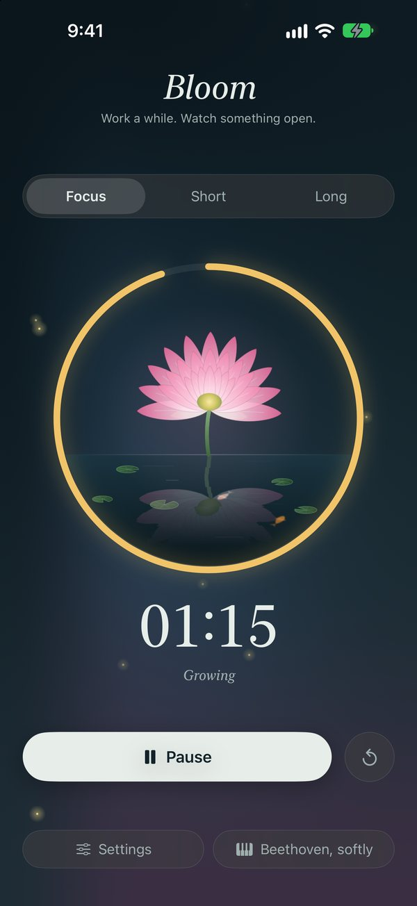
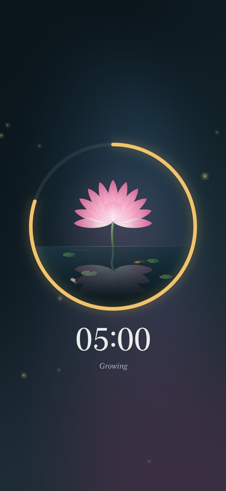
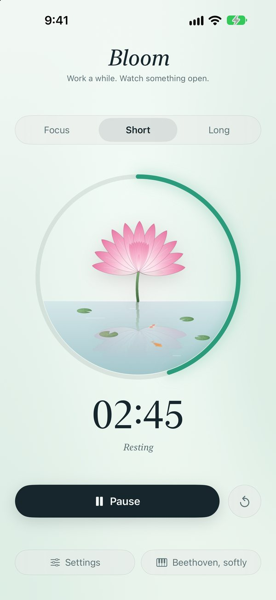
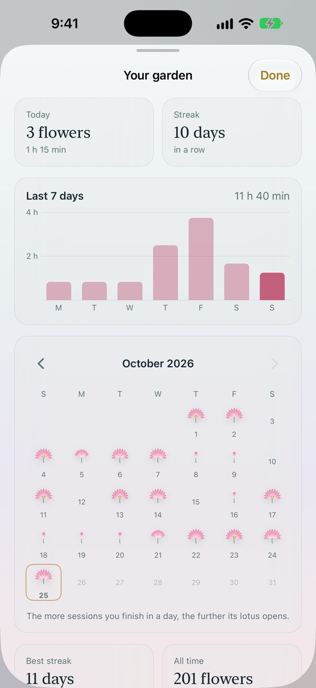
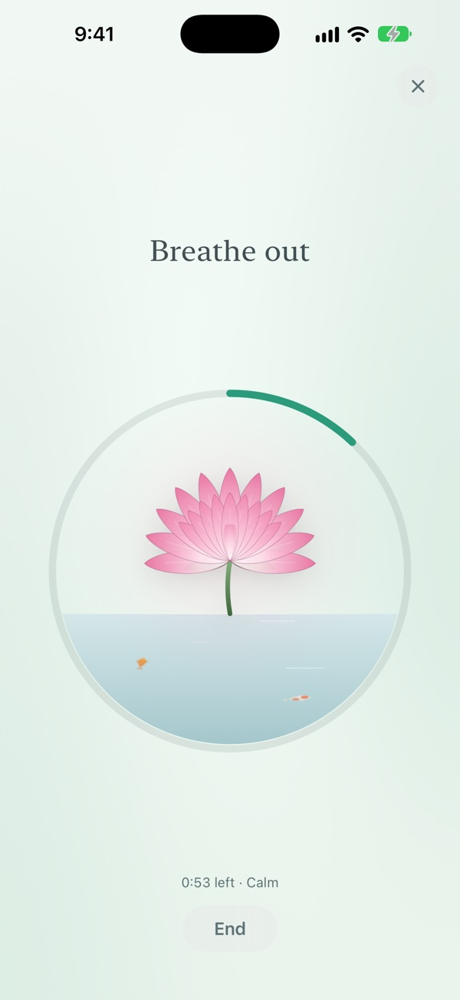
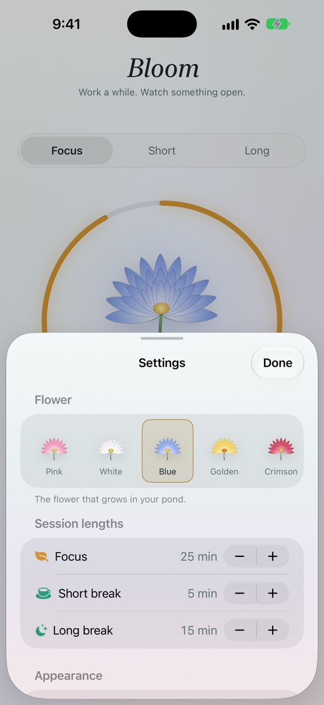

Work a while. Watch something open.
Bloom is a calm focus timer for iPhone. A lotus opens as you work, closes while you rest, and every finished session leaves a lily pad on the pond.
Download on the App StoreFree · Bloom Pro optional · iPhone · iOS 17 or later · No account needed

A timer with something to show for it
The lotus grows with your focus, then rests when you do.



What's inside
Simple on purpose.
Grows as you focus
The lotus opens petal by petal through each session, and folds closed on breaks.
A pad for every session
Finished sessions float on the pond, so you can see your day at a glance.
Sound to work to
Beethoven's Moonlight Sonata, rain on leaves, or slow waves. It keeps playing with the screen locked.
Quiet mode
While a session runs, everything but the flower and the time fades away. Tap to bring it back.
A chime when time's up
Even with Bloom closed, a soft chime tells you the session is over.
Day and night
Follows your phone's light or dark setting, and supports larger text and Reduce Motion.
Bloom Pro
An optional upgrade. Everything above stays free.



Your garden
Every session you finish plants a flower. See each day in a calendar, your last seven days, and your streaks.
Breathe with the lotus
Guided breathing for your breaks: Calm, Box or 4-7-8. The lotus closes as you breathe in and blooms as you breathe out, with a soft tone or a gentle voice to follow with your eyes closed. Can save Mindful Minutes to Apple Health.
Five more flowers
Grow a blue, white, golden, crimson or violet lotus. Try any of them before you buy.
1 week free, then $12.99 a year
or $1.99 a month, or $29.99 once. Prices in US dollars; the App Store shows the price where you live. Cancel any time in Settings › Apple Account › Subscriptions.
Privacy
Bloom does not collect any personal data.
No account, no ads, no analytics and no tracking. Your settings and your garden stay on your iPhone, and deleting Bloom deletes them. If you turn on Apple Health, breathing sessions are saved to the Health app on your phone, and nowhere else.
Support
Questions, problems or ideas? Email amit.rishu@gmail.com. Replies usually within 1–2 business days.
I didn't hear anything when a session ended.
Check that notifications are allowed in Settings › Notifications › Bloom, and that your ringer is on.
Can I change how long sessions last?
Yes. Tap Settings in the app: focus runs from 1 to 90 minutes, breaks from 1 to 40. A long break comes after every fourth focus session.
Where did my lily pads go?
The pond shows today's sessions and starts fresh each morning. Every finished session is kept in your garden: tap the flower button to the left of Start.
How do I get Bloom Pro back on a new iPhone?
Sign in with the same Apple Account, open the garden, tap See Bloom Pro, then Restore purchases.
How do I cancel my subscription?
In your iPhone's Settings › Apple Account › Subscriptions › Bloom. Pro stays unlocked until the end of the period you've paid for. The lifetime purchase is paid once and never renews.
Can the breathing voice sound more natural?
Yes. Bloom uses the voices built into your iPhone. In Settings, search for "Voices", open English, and download a female voice marked Premium. Bloom uses it once you've closed Bloom (swipe it away in the app switcher) and opened it again.
The buttons disappeared during a session.
That's quiet mode. Tap anywhere on the screen to bring them back.